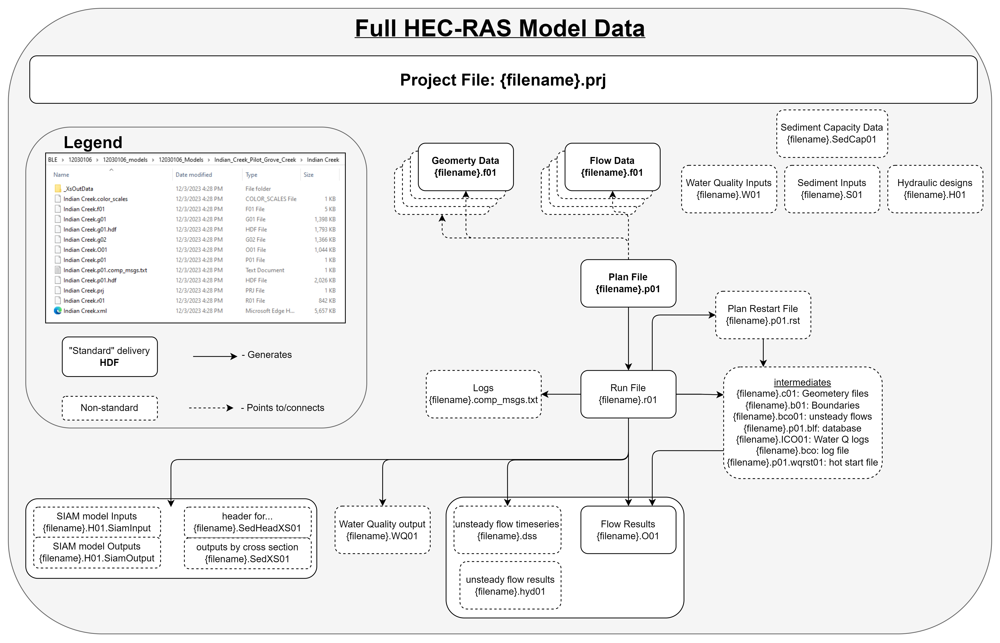

HEC family

The Hydrologic Engineering Center (CEIWR-HEC) exists to support the U.S. Army Corps of Engineers (USACE) Civil Works water resources and water management responsibilities by increasing USACE technical capability in hydrologic engineering and water resources planning and management. From: The US Army Corps of Engineers Hydrologic Engineering Centers’ Mission Statement
Quick links
HEC-HMS
The HEC Hydrologic Modeling System (HEC-HMS) is a 1 dimensional rainfall-runoff modeling software used to estimate discharge based on rainfall at watershed scales. Beyond simplistic channel routing schema representation, this utility provides states for ground and surface water estimates, and with the decrease in dimensional and representational resolutions, can be run for 100’s of years at hourly timescales and wide geographies in a short time.
Relevant utilities: A Lightweight HMS runner for linux
HEC-RAS 1D
The Hydrologic Engineering Center River Analysis System, (HEC-RAS) is a 1 dimensional implicit finite difference solver using the full dynamic form of the 1D Saint venant equation. As a 1D model, cross sections are made to represent planes of perpetual flow and geographic representation is only loosely enforced. Given it’s extensive prominence and legacy deployments across hydraulic efforts, the form and standard data preparation procedures can vary wildly, although more recent standards provide some level of robustness as in maintains deep legacy backwards compatibility as it keeps pace with technical advancements.
HEC-RAS 2D
As the new defacto standard for modeling, HEC-RAS 2D solves the finite volume forms of the 2D Diffusion Wave equations; Shallow Water Equations (SWE-ELM) with a Eulerian-Lagrangian approach to solving for advection; or a Shallow Water Equation solver (SWE-EM) that uses an Eulerian approach for advection.
…And just to round out the set…
Telemac & OpenFOAM
Adding a 3rd dimension to the solver adds not insignificant mathematical complexity to the problem but is as close to encapsulating our full understanding of the laws governing reality as we can achieve. This software, while not within the HEC umbrella, accomplishes that task; solving the 3D shallow water equations while providing the modeler with a host of controls for model interactions. Although the goal of modeling, particularly in this context, is to get as close a representation of the real world as we can, it’s worth noting that meeting that goal with these tools is as much an art as it is a science. Grid spacing, timing, boundary conditions, and model parametrization all factor in to getting a “good” result out of the models, and in fact it can possible to get the right answer for the wrong reason, a reasonable approximation for the wrong reason, or the desired answer for justifiable reasons.
Tutorials
Explainers
The HEC-RAS data format
 The HEC-RAS data format is a neat web of interconnected, dependent, temporary, and otherwise critical sidecar files which all contain the data needed by the HEC-RAS engine to run the model specified. Since it’s introduction in 1995, more modern formats of storing that data have given rise to additional sidecar files that typically represent transformations of the raw files into HDF equivalents and that conversion is handled by the HEC-RAS engine internally. In current releases of the software, if you open a model that does not have these files already located, the software creates them for you, and their naming schema is simply that base filename with a .hdf file extension added and so these are not diagrammed out in the figure above for simplicity. Each of these sidecar files has a particular objective in parameterizing the model and the following table describes what each of these represent:
{kind=link}
| File grep Pattern (# denotes single numeric wildcard) | HEC-RAS Model Use |
|---|---|
| .g## | Geometry definitions |
| .prj | Projection (can be non-standard proj4 string defined file) |
| .prj | Project (same extension, defines how RAS models are wired) |
| .p## | Plan file, used to drive the model |
| .f## | Steady Flow file. Profile information, flow data and boundary conditions |
| .h## | Hydraulic Design data file |
| .v## | Velocity file |
| .o## | Output file |
| .r## | Run file for steady flow |
| .u## | unsteady Flow file. Profile information, flow data and boundary conditions |
| .x## | Run file for unsteady flow |
| .dss | Data files |
| .rasmap | Output plan |
{kind=link}
While more simplistic model might look like the left side of Figure 1, model flow can quickly get complicated. It’s not uncommon, even in operations, to come across models that get incredibly creative with how they use this data format to represent the system. In addition to the general lag in software versions you’d normally find, it’s not unheard of to find models with multiple plans, plans that point to multiple geometry and flow files, as we see on the right side of Figure 1
Base Level Engineering
Quickstart resource: https://www.fema.gov/sites/default/files/documents/fema_state-quick-guide-base-level-engineering.pdf
Base Level Engineering (BLE) is an attempt at setting a standard model format that one can expect. While that standardization is not always consistent, across time, across regions, or even within a particular vendor. However, these standards and commonalities make it easier to know what to expect and give you a rough idea of the sort of modeling effort that went into creating these data. Although BLE represents a subset of the available HEC-RAS data, it is by far one of the most centralized sources of HEC data.
Base level engineering, as the name implies, is a baseline solution to understanding the risk of a location to flood recurrence intervals. To do this, the Federal Emergency Management Agency contracts out engineering firms to develop what were traditionally rather coarse one-dimensional HEC-RAS modeling efforts with a few simple water surface profiles which are intended to represent common high flow magnitudes. These modeling efforts have since evolved into more robust one and two dimensional HEC-RAS rain-on-grids with multiple water surface profiles. These resulting maps offer a solid credible engineering analysis and modeling foundation for communities to start planning and enforcing development and insurance codes through the establishment of a Base Flood Elevation (a 100 year water surface elevation) which forms the basis for Flood Insurance Rate Maps as provided by the National Flood Insurance Program. In short, Base Level Engineering provides the modeling surface off which the elevations are pulled to create the mapping surface off which insurance enforcement operates.
While BLE represents a standard, there are variations on that standard that make some models more robust than others. The “baseline standard” typically involves a series of hydrologic and hydraulic analyses that follow/target the rough general highlights:
There are early attempts at making the reading of some of these attributes programatically with the HEC-REAS model integrity check tool. It’s important to note that BLE is not a regulatory product (the FIRM is that product), but can be adopted as such. FEMA Region 6 has done a phenomenal job opening and publishing their BLE models, but others place them into FEMA’s closed database, called the Mapping Interface Platform (MIP). Learn more about these data in particular at their data source page, or at the RRASSLER utility developed to help make wressling the technical friction of those data.
Why RAS cross sections are not Hydrofabric transects
A more technical stonewall: hydrofabric is a directed non-dendritic graph with contiguous spatial coverage and RAS models are singular, isolated entries in an overlapping mosaic of sparse coverage. Walking them back and forth requires some sort of informed crosswalk, the construction of which is 1) unique to the view of each dataset and 2) can be accomplished and justified in a number of different ways.
HEC RAS cross sections are often conflated with hydrofabric transects, but are more appropriately thought of as a seed source for such for a few reasons.
The first and most obvious reason is that 1D HEC-RAS is not a spatial model, and the cross sections are not strictly a spatial object. Improvements in standards and the derivation of that core data have largely removed this concern, as the vast majority of “modern” 1D HEC-RAS models are represented such that the direct parameterization of the model data from traditional spatial data is 1:1.
The second reason that these models are not seamlessly cross-pollinateable is that the hydrofabric is a flowline –> Catchment representation of the landscape, and the flowline is the “seed” for the geometrically derived line which defines the cross sections that constitute the hydrofabric cross section database. For RAS models, the modeled flow line is not encompassed by a single hydrofabric flow line, and the cross section of the RAS model is designed to match the model flowline. Therefore, if we’re going to tie the spatial representation of the ras cross section to the hydrofabric, not only does that modeled stream centerline need to be tied to the hydrofabric representation, but the relationship of the hydrofabric line needs to be explicitly tied to the geometry of your new network. This is certinly quite fesable, but is a relativly expensive transformation to fit into memory, and that scale grows proportianally with the size of the transects.
One of the hydrofabrics greatest strengths is that it can be manipulated and massaged at scale very nicely. To do that, some form of consistent parameterization is applied (e.g.: there are 10, evenly spaced transects per flowline). However, RAS cross sections are rarely evenly spaced and certainly not consistent (and therefore, predictable) from model to model. This adds additional geographic variation, which is not a function of the geometric representation of the flow network.
Finally, spacing for traditional RAS model cross sections is designed with a stage-based prediction outcome in mind, whereas t-route is intended to accurately represent the timing and routing of water. Although in an ideal world those should match very closely, in practice that does not appear to be the case at all, and can be quite expensive to gather the same resolution of prediction
These databases can be made more compatible but in order to do so the RAS cross sections need to be matched with the appropriate hydrofabric flowline. Depending on the technical limitations of the model in which you are applying those cross sections too and how pedantic you feel like being, you may also need to “shift” the 0 of the RAS cross section to align with the intended river centerline, and many applications will desire a subset of the RAS cross sections which involves selecting the desired ones from the database. Finally, in order to conform to the described data model of the hydrofabric, the calculated attributes including the hydrofabric flowline ID, the order of the cross sections along that flow line, and the distance from the start of the flow line all need to be calculated and applied to the database in order to match the specification.
Manipulating HEC-RAS data
Like most models and constraints associated with maintaining backwards compatibility with There are several utilities related or immediately adjacent to HEC-RAS mod
I touch on ways we can create HEC-RAS data in “A future Open HEC” below:
Acquiring
Acquiring HEC-RAS models is a manual process but you can find some utilities that help facilitate this in RRASSLER including the scrape_ble_lib function.
Transformations
- To get a file-level appreciation for how complex and nuanced writing a HEC-RAS data reader can be, see FEMA_BLE by Ali Forghani: a pythonic implementation of a HEC-RAS model reader.
- To make the HEC-RAS model data accountable (as a model) and spatial for further geospatial data accessibility and reuse cases see RRASSLER.
Cataloging
Keeping track of the many disparate files is typically accomplished by the archivist, but the power user is one who needs to keep track of the different versions of the models they might need to deploy and facilitate access to the model in the same shape as geospatial data. While downloaded aArchives might be constructed by the model providers or by source venders themselves, inter-agency and inter-vendor HEC-RAS model sharing is far less standardized than other, more common datasets. Both RRASSLER and MCAT-RAS provide this service, and you can also construct a STAC resource if you can tolerate the unsorted nature of the system
A future Open HEC
With all of the tools at our disposal, it’s certainly not impossible to see a pathway towards a free and open source suite of HEC-RAS model generation utilities. This would drastically reduce the pain associated with parameterizing and instantiating HEC-RAS models, both 1 and 2D, but there’s a massive lack of hand work going into the creation of this tooling and not enough time in the day. If this is something you’d like to collaborate on, please reach out!